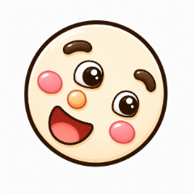

どの かおで あそぶ?
😊 きほんのかおよういされた かおで すぐ あそべる
🖼️ とりこんだ 絵で あそぶおえかきした かおの パーツで あそぶ
「とりこみ・せってい」で 顔の絵を とりこんで「ふくわらいパーツ」を せっていすると、みんなの おえかきで あそべます
め・まゆげ・はな・くちを ドラッグして かおを つくろう!

ふくわらい「とりこみ・せってい」で 顔の絵を とりこんで「ふくわらいパーツ」を せっていすると、みんなの おえかきで あそべます
め・まゆげ・はな・くちを ドラッグして かおを つくろう!